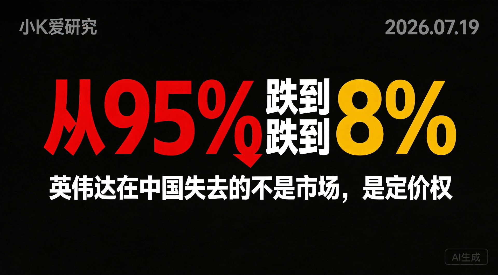

先看一组数字。
2023年，英伟达在中国AI芯片市场的份额是95%。
2026年，摩根士丹利给出的预测是8%。
三年时间，五分之四的市场易主。费城半导体指数一周跌了10%，直接跌进技术性熊市。
所有人都在问：英伟达怎么了？
但这个问题问错了。真正该问的是：英伟达失去了什么？
答案不是市场。是定价权。
市场份额丢了可以抢回来，但定价权丢了，商业模式就塌了。当客户开始按Token询价，而不是按卡询价时，英伟达的整个估值逻辑都在松动。
今年WAIC，钛媒体的记者在展馆里泡了一整天，写了一句话：
"过去客户问'你们有多少张卡'，现在问'Token成本多少，响应时延多长'。"
这可能是今年WAIC最有信息量的一句话。
听起来只是提问方式变了，但背后是算力的经济属性在变。
当客户问"有多少张卡"时，算力是固定资产——一次采购入账，按折旧周期摊销，看的是产能利用率。
当客户问"Token成本多少"时，算力是运营支出——按使用量付费，按推理次数结算，看的是单位成本和毛利率。
这两种问法，对应两种完全不同的财务模型、估值逻辑和投资回报率计算。
更关键的是：第二种问法，对英伟达不利。
因为按Token计价，比的不是单卡算力多强，而是系统级的成本效率——谁能用更少的功耗、更低的延迟、更高的吞吐产出每一个Token，谁就拥有定价权。
这恰好是超节点的主场。
今年WAIC最火的展品是超节点。华为昇腾950首次公开展出真机，沐曦、昆仑芯、百度昆仑芯、中兴……整个展馆被这些"黑色机柜"占领。
华泰证券把2026年叫做"国产超节点元年"。
但大多数人写超节点，写的是技术参数——多少张卡、多少FLOPS、互联带宽多少。这些都没错，但都没抓住重点。
超节点真正的意义，是把Token生产的成本结构彻底改写了。
这些数字背后的逻辑是：
过去，Token生产是"单卡作坊"模式——一张卡算一张卡的，卡与卡之间数据搬来搬去，效率损耗巨大。
现在，超节点把几千张卡变成"一台计算机"——数据在纳秒级完成传输，训练和推理从"单卡能力"变成"系统级产能"。
结果就是：单位Token的产出成本暴降。这不是渐进式的改良，是结构性的成本坍塌。
成本降了，定价就会变。Kimi K3是最好的例子。
7月16日凌晨，月之暗面发布Kimi K3——2.8万亿参数，全球首个开源的3万亿级模型。Frontend Code Arena以1679分登顶第一，压过Claude Fable 5（1631分）和GPT-5.6 Sol（1618分）。
但真正有杀伤力的不是性能，是定价。
| 模型 | 输入价格（$/百万Token） | 输出价格（$/百万Token） |
|---|---|---|
| Kimi K3 | $3（缓存命中 $0.30） | $15 |
| GPT-5.6 Sol | ~$15 | ~$75 |
| Claude Fable 5 | ~$15 | ~$75 |
K3的输入成本只有GPT-5.6 Sol的28%，输出成本也是28%。
编程场景下缓存命中率超过90%，实际输入成本可以低到$0.30/百万Token——差不多是GPT-5.6 Sol的五十分之一。
多位分析人士的总结很精准："以Sonnet级别的价格，提供Opus级别的产出。"
K3敢这么定价，不是因为月之暗面做慈善。是因为底层算力成本变了——昇腾超节点把Token生产的成本打下来了，模型层才有底气把价格打到海外的三分之一。
这是一条完整的因果链：
超节点 → Token生产成本暴降 → 模型层敢定价低40%-90% → 美国闭源模型的高利润商业模式被打碎
Anthropic官网的数据显示，海外企业迁移到中国大模型后，推理成本降幅普遍在30%到95%之间。性能差距收窄到1%-4%，价格却便宜了60%-90%。
这不是竞争。这是降维打击。
理解了上面这条链，你就理解了费城半导体指数为什么一周跌10%。
市场暴跌，不是因为英伟达的技术突然不行了。GB300依然很强，Blackwell架构依然是业界标杆。
但投资者突然意识到一件事：当客户开始按Token询价，英伟达的"按卡卖"模式就不灵了。
按卡卖，是卖方市场——我造什么你买什么，定价权在我手里。
按Token卖，是买方市场——我不管你用什么卡，我只看每百万Token多少钱。
这意味着：芯片的绝对算力不再是唯一指标，系统级的成本优化能力才是新的核心竞争力。
两组独立预测——摩根士丹利和伯恩斯坦——给出高度一致的结论：华为50-62%，英伟达8%。
三年时间，五分之四的市场易主。
更致命的是：这些流失的份额，大概率回不来了。不是因为英伟达做不出好产品，而是因为整个定价逻辑变了。当中国市场从"按卡买"切换到"按Token买"，英伟达的封闭生态（CUDA）反而成了成本负担。
这件事放到中美对比的框架里看，更清晰。
| 维度 | 美国路线 | 中国路线 |
|---|---|---|
| 商业模式 | 闭源高价（Fable 5 $75/百万输出） | 开源性价比（K3 $15/百万输出） |
| 算力生态 | 英伟达封闭（NVLink/CUDA） | 超节点开放（灵衢开源） |
| 定价锚 | 按卡卖（卖方市场） | 按Token卖（买方市场） |
| 核心优势 | 单卡性能 + 生态锁定 | 系统级成本效率 |
| 风险 | 高利润模式被低价产品侵蚀 | 软件生态（CUDA差距）仍需追赶 |
美国走的是"性能溢价"路线——我的模型最强，所以可以卖最贵。
中国走的是"性价比屠夫"路线——我的性能接近你，但价格只有你的三分之一，还要开源。
在训练时代，性能溢价是成立的。因为训练对算力要求极高，差距大就是差距大，客户愿意为性能买单。
但在推理时代，逻辑变了。
推理看的是持续吞吐、毫秒响应、单位成本——这些恰好是超节点的主场。当性能差距收窄到1%-4%，价格差距却有60%-90%时，大多数企业客户会怎么选？
答案已经写在采购订单里了。
字节跳动、阿里巴巴锁定大量昇腾950订单。中国移动超节点集采6208张卡，明确锁定昇腾生态。韩国云厂商锁定首批出口订单，马来西亚规划部署3000台昇腾服务器。
这不是"爱国采购"。这是成本驱动的商业决策。
超节点改写的不仅是芯片厂的命运，还有运营商的商业模式。
今年MWC上海，"Token经营"成了高频词。三大运营商都在尝试从传统的"流量经营"迈向AI时代的"Byte+Token"双经营。
2025年的数据已经说明趋势：
"一降一升"——传统业务增长趋缓，AI业务爆发。
运营商从"卖流量"变成"卖Token"，背后的基础设施就是超节点。谁的超节点能把Token生产成本压到最低，谁就能拿到运营商的大单。
这也是为什么超节点竞争如此激烈——不只是芯片厂在打，整个算力产业链的价值分配都在被重写。
这不是一场技术战争，是一场定价权战争。英伟达失去的不是市场，是定义价格的能力。一旦定价锚从"卡"切换到"Token"，这个能力就很难拿回来了。
最后说一句。
很多人看到"英伟达份额跌到8%"，第一反应是"国产替代真牛"。但我想说的不是这个。
我想说的是：定价权的转移，往往不是从技术突破开始的，而是从提问方式的变化开始的。
当客户不再问"你有多少张卡"，而是问"Token成本多少"时，游戏规则就变了。
英伟达不是输在技术上。是输在时代换了赛道，而赛道换了计分方式。
这比技术落后更致命。因为技术可以追，但定价逻辑一旦变了，就很难逆转。
小K爱研究